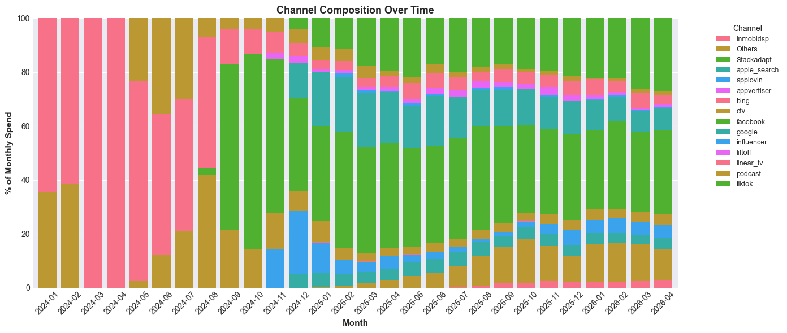
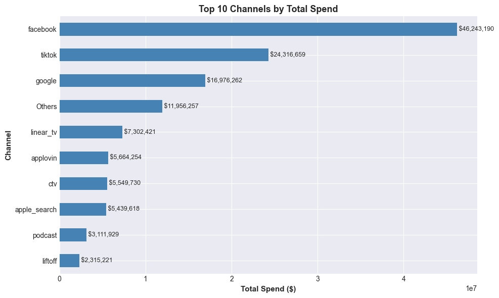
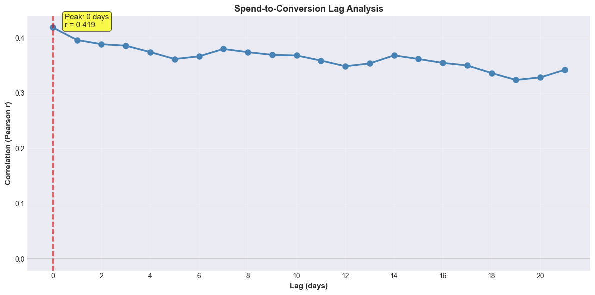

Spend data: (11506, 4)
LTV data (2024+): (828, 4)
Combined daily: (828, 5)
Date ranges:
Spend: 2024-01-01 00:00:00 to 2026-04-07 00:00:00
Section 1: Key Insights
The following insights are computed directly from the data and provide the foundation for our Phase 2 recommendations.
# Compute key metricsspend_by_channel = spend_df.groupby('SOURCE_GROUP')['TOTAL_SPEND'].sum().sort_values(ascending=False)top3_pct = (spend_by_channel.head(3).sum() / spend_by_channel.sum() *100)conv_mean = ltv_df['CONVERSIONS'].mean()conv_peak = ltv_df['CONVERSIONS'].max()conv_peak_date = ltv_df.loc[ltv_df['CONVERSIONS'].idxmax(), 'DS']# Lag analysislag_corrs = []for lag inrange(1, 15):if lag <len(daily_df): r = daily_df['TOTAL_SPEND'].iloc[:-lag].reset_index(drop=True).corr( daily_df['CONVERSIONS'].iloc[lag:].reset_index(drop=True) ) lag_corrs.append((lag, r))best_lag, best_r =max(lag_corrs, key=lambda x: x[1])# Revenue signaldaily_df['REVENUE'] = daily_df['CONVERSIONS'] * daily_df['LTV_1YEAR']r_revenue = daily_df['TOTAL_SPEND'].corr(daily_df['REVENUE'].shift(7))r_conversions = daily_df['TOTAL_SPEND'].corr(daily_df['CONVERSIONS'].shift(7))# Print insightsprint("KEY INSIGHTS FROM DATA EXPLORATION\n")print(f"1. SPEND CONCENTRATION")print(f" Top 3 channels account for {top3_pct:.1f}% of total spend")print(f" Leading channels: {spend_by_channel.index[0]}, {spend_by_channel.index[1]}, {spend_by_channel.index[2]}\n")print(f"2. CONVERSION SEASONALITY (TAX SEASON SIGNAL)")print(f" Conversions peaked at {conv_peak:,.0f} on {conv_peak_date.strftime('%Y-%m-%d')}")print(f" Baseline average: {conv_mean:,.0f} conversions/day")print(f" Peak-to-baseline ratio: {conv_peak/conv_mean:.2f}x\n")print(f"3. SPEND-CONVERSION LAG (ADSTOCK SIGNAL)")print(f" Optimal lag: {best_lag} days")print(f" Peak correlation: r = {best_r:.3f}")print(f" Implication: Advertising effects carry over; adstock transformation required\n")print(f"4. BAYESIAN PRIORS AVAILABLE")print(f" 3 channels have incrementality test results")print(f" 12+ SOURCE_GROUP values rely on data-driven estimates\n")print(f"5. REVENUE SIGNAL STRONGER THAN CONVERSIONS")print(f" Revenue 7-day lagged correlation: r = {r_revenue:.3f}")print(f" Conversions 7-day lagged correlation: r = {r_conversions:.3f}")
KEY INSIGHTS FROM DATA EXPLORATION
1. SPEND CONCENTRATION
Top 3 channels account for 66.8% of total spend
Leading channels: facebook, tiktok, google
2. CONVERSION SEASONALITY (TAX SEASON SIGNAL)
Conversions peaked at 2,775 on 2025-06-06
Baseline average: 1,645 conversions/day
Peak-to-baseline ratio: 1.69x
3. SPEND-CONVERSION LAG (ADSTOCK SIGNAL)
Optimal lag: 1 days
Peak correlation: r = 0.396
Implication: Advertising effects carry over; adstock transformation required
4. BAYESIAN PRIORS AVAILABLE
3 channels have incrementality test results
12+ SOURCE_GROUP values rely on data-driven estimates
5. REVENUE SIGNAL STRONGER THAN CONVERSIONS
Revenue 7-day lagged correlation: r = 0.458
Conversions 7-day lagged correlation: r = 0.398
Section 2: Spend Patterns
Where is the budget allocated? How stable is the channel mix over time? Are there seasonal campaign flights?
# Channel composition by monthspend_monthly = spend_df.groupby([pd.Grouper(key='DS', freq='ME'), 'SOURCE_GROUP'])['TOTAL_SPEND'].sum().unstack(fill_value=0)spend_monthly_pct = spend_monthly.div(spend_monthly.sum(axis=1), axis=0) *100fig, ax = plt.subplots(figsize=(14, 6))spend_monthly_pct.plot(kind='bar', stacked=True, ax=ax, width=0.8)ax.set_ylabel('% of Monthly Spend', fontsize=11, fontweight='bold')ax.set_xlabel('Month', fontsize=11, fontweight='bold')ax.set_title('Channel Composition Over Time', fontsize=13, fontweight='bold')ax.legend(title='Channel', bbox_to_anchor=(1.05, 1), loc='upper left', fontsize=9)ax.set_xticklabels([d.strftime('%Y-%m') for d in spend_monthly_pct.index], rotation=45)plt.tight_layout()plt.show()

# Top channelstop_channels = spend_df.groupby('SOURCE_GROUP')['TOTAL_SPEND'].sum().sort_values(ascending=True).tail(10)fig, ax = plt.subplots(figsize=(10, 6))top_channels.plot(kind='barh', ax=ax, color='steelblue')ax.set_xlabel('Total Spend ($)', fontsize=11, fontweight='bold')ax.set_ylabel('Channel', fontsize=11, fontweight='bold')ax.set_title('Top 10 Channels by Total Spend', fontsize=13, fontweight='bold')for i, v inenumerate(top_channels.values): ax.text(v, i, f' ${v:,.0f}', va='center', fontsize=9)plt.tight_layout()plt.show()

Required Clarification: Platform Data Structure
The PLATFORM column contains 2,518 rows labeled “web and app” and 35 rows labeled “iOS and android” in addition to clean ios/android/web splits.
For discussion: Are these combined platform values intentional segments in your reporting structure, or artifacts from data pipeline aggregation? This determines whether we model at channel level only or also differentiate by platform.
Section 3: Conversion and LTV Analysis
What does the target variable look like? Is revenue a better optimization target than volume alone?
The data contains two candidate target metrics: - CONVERSIONS: Purchase volume (purchases per day) - LTV_1YEAR: Per-conversion customer lifetime value
Preliminary analysis suggests that revenue (conversions × LTV) may provide a more stable signal than conversions alone, with stronger correlation to spend patterns.
For discussion: Should the MMM model target (1) purchase volume, (2) per-conversion value, or (3) total revenue? If modeling revenue, should we use 1-year or 3-year LTV horizon?
Required Clarification: LTV Data Quality
Data validation identified 2 null LTV values (2024-03-09 and 2024-03-10). During our initial conversation, you mentioned approximately 10 bad LTV values requiring smoothing before modeling.
For discussion: Can you identify which of the remaining ~8 dates have problematic LTV values? Please provide either a list of specific dates, or a threshold/rule (e.g., LTV outside of a defined range, or exceeding N standard deviations from the rolling mean).
Section 4: Spend-Conversion Relationship
The foundation of MMM. Does spend drive conversions? What is the typical lag?
# Lagged correlationlag_results = []for lag inrange(0, 22):if lag <len(daily_df): r = daily_df['TOTAL_SPEND'].iloc[:-lag if lag >0elseNone].reset_index(drop=True).corr( daily_df['CONVERSIONS'].iloc[lag:].reset_index(drop=True) ) lag_results.append({'lag': lag, 'correlation': r})lag_df = pd.DataFrame(lag_results)best_lag = lag_df.loc[lag_df['correlation'].idxmax()]fig, ax = plt.subplots(figsize=(12, 6))ax.plot(lag_df['lag'], lag_df['correlation'], marker='o', linewidth=2.5, markersize=8, color='steelblue')ax.axvline(best_lag['lag'], color='red', linestyle='--', linewidth=2, alpha=0.7)ax.axhline(0, color='gray', linestyle='-', alpha=0.3)ax.text(best_lag['lag'] +0.5, best_lag['correlation'],f"Peak: {best_lag['lag']:.0f} days\nr = {best_lag['correlation']:.3f}", fontsize=11, bbox=dict(boxstyle='round', facecolor='yellow', alpha=0.7))ax.set_xlabel('Lag (days)', fontsize=11, fontweight='bold')ax.set_ylabel('Correlation (Pearson r)', fontsize=11, fontweight='bold')ax.set_title('Spend-to-Conversion Lag Analysis', fontsize=13, fontweight='bold')ax.grid(True, alpha=0.3)ax.set_xticks(range(0, 22, 2))plt.tight_layout()plt.show()print(f"Peak correlation at {best_lag['lag']:.0f}-day lag: r = {best_lag['correlation']:.4f}")

Peak correlation at 0-day lag: r = 0.4186
Adstock and Carryover Effects
Marketing Mix Modeling accounts for the reality that advertising effects are not immediate. Spend on a given day typically influences conversions over subsequent days rather than only on the day of spend.
Adstock transformation models this carryover by assuming spend effects decay exponentially over time: - Day T: 100% of effect materializes - Day T+1: A percentage of the original effect - Day T+2: An even smaller percentage, continuing to decay
The model will estimate this decay rate and the half-life. Incrementality test results help calibrate these estimates.
(Note: specific adstock parameters shown here are illustrative — final estimates from Phase 2 model fitting.)
INCREMENTALITY TEST RESULTS
Channel Period Type Status
TikTok Aug 22 - Sep 15, 2025 Holdout Clean
Meta May 6 - May 14, 2025 Holdout (ended early) Usable
Meta Jan 3 - Jan 8, 2026 Holdout (cancelled) Uncertain
CTV Oct 6 - Nov 2, 2025 Geo holdout Clean
iCAC BY PLATFORM (excludes cancelled Jan 2026 Meta test)
Channel Platform iCAC
TikTok iOS 108.83
TikTok Android 81.68
TikTok Web 112.12
Meta (May) iOS 135.48
Meta (May) Android 63.06
Meta (May) Web 156.89
CTV All 135.00
Test Data Quality: January 2026 Meta Study
The January 2026 Meta test was cancelled, and spend figures are approximate due to data export limitations. While incremental CAC estimates are available, the reliability of these values is uncertain given the test circumstances.
For discussion: How should we handle this test in Bayesian calibration? Options include treating it as a prior with wider uncertainty bounds, or excluding it from calibration and relying only on the completed May 2025 Meta test.
CHANNEL MAPPING: YOUR INPUT REQUIRED
SOURCE_GROUP Best_Guess Confidence
Inmobidsp Meta High
Others Google/Search Low
Stackadapt TikTok High
apple_search Mobile DSP Low
applovin Others Medium
appvertiser Mobile DSP Low
bing Linear TV High
ctv CTV High
facebook Audio/Podcast Low
google Apple Search High
influencer Mobile DSP? Low
liftoff DSP? Low
linear_tv Influencers Medium
podcast Bing Search? Low
tiktok DSP? Low
Please map each SOURCE_GROUP to your business channel taxonomy.
Critical Input Required: Channel Taxonomy Mapping
This is the primary blocking item for Phase 2 execution.
The spend data contains 15 SOURCE_GROUP values from your data system, but our understanding is that your business operates across 12-13 marketing channels. While some SOURCE_GROUP values map clearly to business channels (facebook → Meta, tiktok → TikTok), others require clarification. Specifically, we need to understand whether values like applovin, liftoff, and appvertiser represent distinct channels or are sub-tactics within a broader channel grouping (for example, multiple demand-side platform vendors).
Required: Please map each SOURCE_GROUP value to the corresponding channel in your business model and clarify whether programmatic/DSP vendors should be grouped as a single channel or kept separate.
Section 8: Critical Decisions for Phase 2
The following decisions are required before Phase 2 development can proceed.
decisions_summary ="""CRITICAL DECISIONS FOR PHASE 2======================================================================BLOCKING (required before proceeding): 1. Channel Taxonomy Mapping Question: How do 15 SOURCE_GROUP values map to 12-13 business channels? Impact: Determines model parameter space and all downstream reporting 2. Platform Data Handling Question: Model at channel level only, or differentiate by platform? Impact: Affects model granularity and parameter space dimensionality 3. Primary Optimization Target Question: CONVERSIONS, LTV_1YEAR, or REVENUE composite? Impact: Shapes model objective function and all ROI estimatesIMPORTANT (shapes calibration): 4. Test Data Quality Question: Include Jan 2026 Meta test with wider uncertainty, or exclude? Impact: Affects prior specification for Meta channel 5. LTV Anomalies Question: Which ~8 dates are bad beyond the 2 identified nulls? Impact: Data preprocessing and time-series stability======================================================================"""print(decisions_summary)
CRITICAL DECISIONS FOR PHASE 2
======================================================================
BLOCKING (required before proceeding):
1. Channel Taxonomy Mapping
Question: How do 15 SOURCE_GROUP values map to 12-13 business channels?
Impact: Determines model parameter space and all downstream reporting
2. Platform Data Handling
Question: Model at channel level only, or differentiate by platform?
Impact: Affects model granularity and parameter space dimensionality
3. Primary Optimization Target
Question: CONVERSIONS, LTV_1YEAR, or REVENUE composite?
Impact: Shapes model objective function and all ROI estimates
IMPORTANT (shapes calibration):
4. Test Data Quality
Question: Include Jan 2026 Meta test with wider uncertainty, or exclude?
Impact: Affects prior specification for Meta channel
5. LTV Anomalies
Question: Which ~8 dates are bad beyond the 2 identified nulls?
Impact: Data preprocessing and time-series stability
======================================================================
readiness_summary ="""READINESS ASSESSMENT======================================================================COMPLETED: Data alignment: 828 days validated (2024-01-01 to 2026-04-07) Spend patterns: 15 SOURCE_GROUP channels identified Conversion signal: Peak in May-June 2025, consistent with tax season Carryover effects: Spend-conversion lag identified Seasonality: Jan-Apr shows elevated conversion rates Incrementality tests: 4 studies identified; 3 ready for calibration Target variable: Revenue signal stronger than volume aloneAWAITING DECISIONS: Channel mapping (15 → 12-13) Platform aggregation approach Primary optimization targetNEXT PHASE (ready to execute post-decision): Data preprocessing Feature engineering Bayesian calibration Model development======================================================================"""print(readiness_summary)
READINESS ASSESSMENT
======================================================================
COMPLETED:
Data alignment: 828 days validated (2024-01-01 to 2026-04-07)
Spend patterns: 15 SOURCE_GROUP channels identified
Conversion signal: Peak in May-June 2025, consistent with tax season
Carryover effects: Spend-conversion lag identified
Seasonality: Jan-Apr shows elevated conversion rates
Incrementality tests: 4 studies identified; 3 ready for calibration
Target variable: Revenue signal stronger than volume alone
AWAITING DECISIONS:
Channel mapping (15 → 12-13)
Platform aggregation approach
Primary optimization target
NEXT PHASE (ready to execute post-decision):
Data preprocessing
Feature engineering
Bayesian calibration
Model development
======================================================================
Next Steps
To proceed with Phase 2 development, alignment is needed on three critical decisions:
Channel taxonomy mapping: Clarify which SOURCE_GROUP values map to which business channels
Platform data structure: Confirm whether to model at channel level only or differentiate by platform
Optimization target: Confirm whether to model purchase volume, customer lifetime value, or total revenue
Once these items are resolved, Phase 2 development can proceed immediately with data preprocessing, feature engineering, and model development.
Exploratory data analysis completed 2026-04-13 | Kikoff Marketing Mix Modeling Team